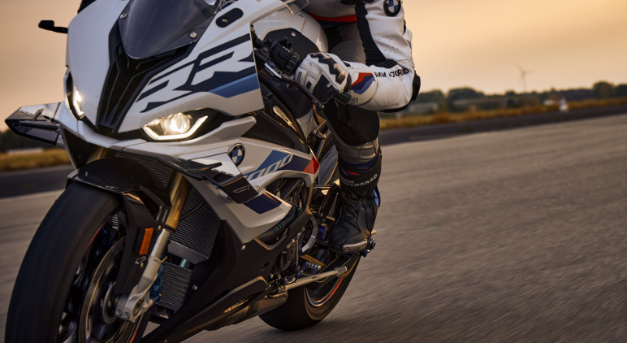
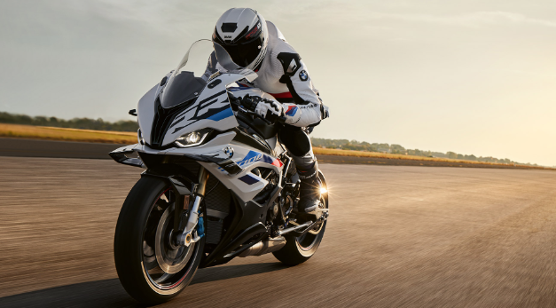
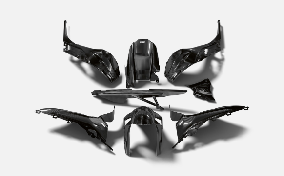

SUPERBIKE OF SUPERLATIVES
The BMW S 1000 RR is now even more focused and more precisely geared towards pure performance. For those who increasingly demand more. More from themselves. More each lap. And more from their RR. Simply put: #NeverStopChallenging. Leading the way is a matter of millimetres, especially in the circles the RR has always been a part of. That’s why we have streamlined and evolved the RR where it matters most: from the new steering angle sensor with Brake Slide Assist and Slide Control as well as the integration of M components and improvements to the electronics and crucial processes for modifying the bike for the race track.Experience this evolution firsthand and discover what sets it apart, all while knowing the extraordinary value that aligns perfectly with the sought-after BMW S 1000 RR Price in India. And all this with a clear goal in mind – claiming the pole position over and over again.
To know BMW S 1000 RR price in India, click here
Depending on the speed, composite plastic winglets on the BMW S 1000 RR generate up to 17.1 kg aerodynamic downforce at 300 km/h. This downforce counteracts the tendency of the front wheel to lift off the road surface when accelerating: the fork maintains contact with the ground and DTC isn’t forced to intervene as much. This allows you to noticeably and even more directly convert drive power into acceleration.
Off to the pit lane after a few laps around the racetrack: The last screen used now always displays after you switch the ignition off/on. This helps you concentrate and stay focused on your mode. One Pure Ride screen and three different Core screens are available depending on your preference. The system displays a suitable maximum speed when the engine is cold. The shift light now makes it much more obvious when the rotational-speed sensor is flashing. And we cleared up the screen, making it even easier for you to check the TFT display to see the factory settings for your assistance systems – like ABS Pro, DTC, or DDC – under Settings.
Unleashed passion: we have once again transferred all the experience from the race track to the high-performance BMW ShiftCam four-cylinder engine in the RR: for 3 hp more output to now total 210 hp (154 kW). The airbox from the M RR ensures particularly good air supply and better load changes. The cylinder heads with new channel geometry and reinforced bearing brackets also stem from the M RR. We have also optimised the standard shift assistant Pro. It now also permits gearshifts with overrun upshifts and overrun downshifts and provides improved load change damping – for more gearshifting precision. And even the chain ring has more teeth now: just like in the M RR, it now has 46 teeth instead of 45 – for more power down the straight.
Precision work for more feedback and performance on your ride: The M chassis kit with raised rear end and adjustable swing arm pivot is standard. Frame recesses ensure greater lateral flexibility. We have lowered the steering head angle 0.5° to 66.4° and decreased the fork bridges offset 3 mm to 26.5 mm, making your front wheel even more precise. We also used captive axle bushes and optimised the brake system to make removing the rear wheel even easier in practice. You can now also choose the damping for DDC Road, Dynamic, and Race: from Race Pro 1 to 3. Using the Race Pro 1 to 3 settings, you can now ride with road damping on country roads.
The optional Pro riding mode and the steering angle sensor, installed for the first time, let you use two functions: Brake Slide Assist for deceleration, and DTC Slide Control for acceleration. The steering angle sensor helps determine your drift angle, which the DTC uses to ensure optimal slip. DTC settings 2 and 3 have been optimised for the racetrack and slicks. After a power slide, Brake Slide Assist helps you decelerate so that you can slide into a curve using the front/rear ABS.
The M package sharpens the sporty profile of the RR. Exclusive Light white/M Motorsport paintwork is only included in this package and gives the motorcycle a powerful look. The package includes: M Sport seat for optimum support on the hunt for crucial milliseconds. Weight-optimised M Carbon wheels with M Tapes for maximum riding dynamics. Or the alternatively available M forged wheels. In addition, the M footrest system and the black fuel filler cap.
The M package sharpens the sporty profile of the RR. Exclusive Light white/M Motorsport paintwork is only included in this package and gives the motorcycle a powerful look. The package includes: M Sport seat for optimum support on the hunt for crucial milliseconds. Weight-optimised M Carbon wheels with M Tapes for maximum riding dynamics. Or the alternatively available M forged wheels. In addition, the M footrest system and the black fuel filler cap.
The Race package optimises the RR for riders striving to be racers. The package includes the low-maintenance and weight-optimised M Endurance chain. As well as the M Titan exhaust system from Akrapovič, which is available exclusively in this package, for an even sportier look with significant weight reduction, or alternatively the high-quality titanium slip-on sports silencer.
The high-quality Carbon package supercharges the superbike look of the machine. This package includes front and rear wheel covers, a chain guard and pinion cover, and the top fairing side panels. These lightweight CFRP components are derived from racing and provide an elegant yet sporty highlights with high-tech aspirations.
The M Billet pack emphasises the sporty character of the bike with high-quality components and exclusive M branding. The package includes: milled parts made of anodised aluminium, including folding and adjustable clutch and handbrake levers with Brake Lever Guard – equipment with maximum quality.